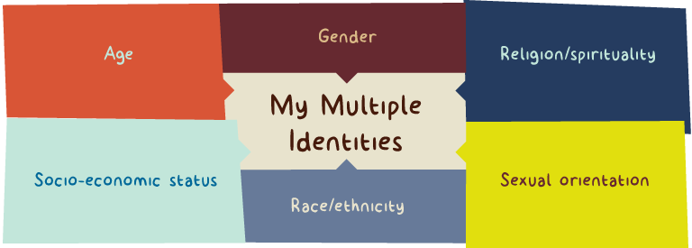
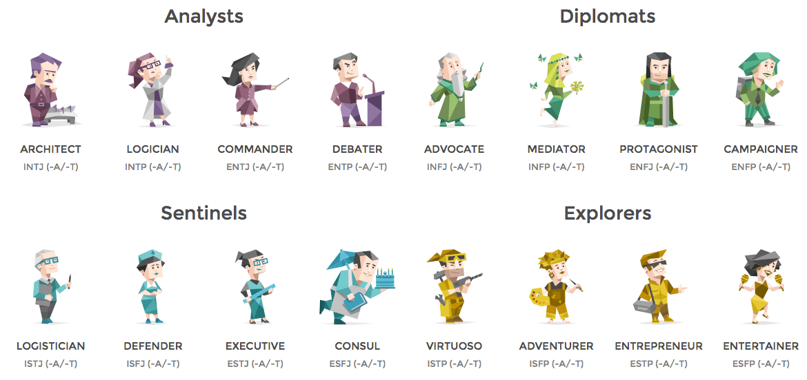
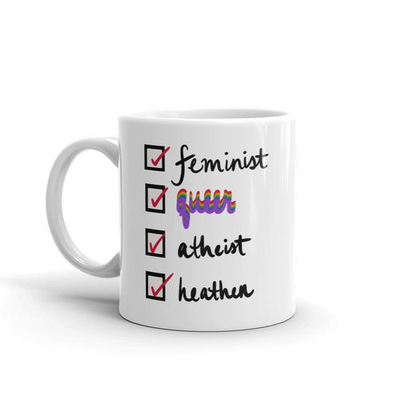
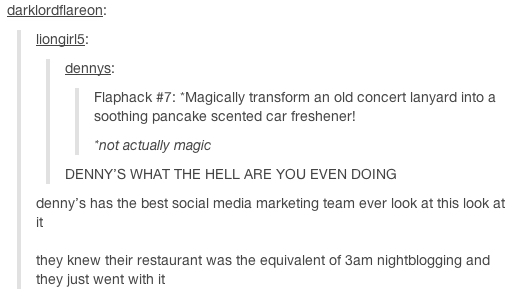
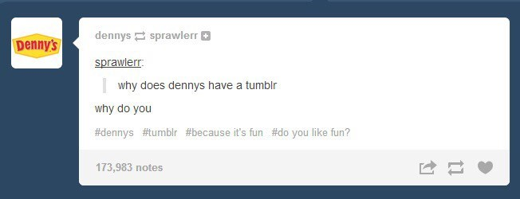
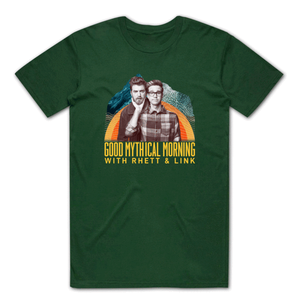

Personality Quizzes, Pile-ons, and Profit:
The Commodification of Identity in the Digital Age
by Sisira Mandapaka
Identity is a fraught topic at the best of times—it’s a quintessentially human experience to grapple with:
- who you are
- who someone else is
- what you’re both called
- what one is called and the other is not
- what neither of you are called

In the age of the internet, there’s more words than ever to define yourself by.
There's more labels to slap on yourself like a sticker collage adorning a college student’s MacBook. In theory, this might work out just fine. More words and category options likely equate to a better grasp on the vocabulary you use to describe yourself, so hypothetically, this might lead to more understanding. But no— it's not that simple.
This has led to more internal conflict of self than ever, especially among many young people coming of age on the internet: the culture wars are here, and they’re in your Twitter replies. The divisions sown between groups can be as small as a difference of opinion on a fictional relationship or span the racial divide, and every single one is preyed upon in order to market you more things.
Brands desperately want you to think they're your friend.
It’s no coincidence that the emphasis on brand relatability, whether it's a social media account for a fast food chain or a Super Bowl ad for a feminine hygiene product, is higher than ever. The more data and ad preference information a company has on a specific user, the more niche they can make their marketing, making the customer feel seen and also like they have something made "just for them", or a "place to belong".

Everyone wants to get in on this type of advertising strategy.
As social media grows as a grounds for advertising opportunity (especially on a platform like Twitter), this sort of content gets more and more traction.
The Denny’s Tumblr account, one of the earliest memorable instances of this, is an iconic piece of internet history.
The goal is for consumers to interact with these accounts just as they would with any other person's account, establishing a rapport and building a positive association with the brand in their mind so they'll want to consume the product being peddled to them.
The constant association between material goods and internal identity...isn't great for your sense of self.
The market collecting our preferences and selling them back to us in the form of content or ads or products or in some other monetized form is not without deep and long-lasting consequences. This can often lead to us tying our sense of identity to these products or media, identifying authenticity via the "images, fashions, and lifestyles available in the market...these in turn become the vehicles by which we perceive others and they us", according to UVA professor of sociology Joseph E. Davis.
It's very possible to feel quite strongly about your market-manufactured labels.
From categories like "cottagecore" and "e-girl" to "gamer" and "fitness blogger", most contemporary identity labels, to some extent, are based in consumerism. All the listed categories require a certain subset of consumption habits to let them keep qualifying as that category. I say "letting them" with a specific intent that loops us back to the inter-identity conflict that is generated between people to the benefit of the market.
Often, members of certain communities will gatekeep said community because of some perceived lack of qualification (maybe you haven't logged enough hours in a certain game, or maybe you have some seemingly slightly unconventional method to making a charcuterie board. Who knows.) The feature of the poll has been used extensively to this effect: having the "correct" opinion about seemingly arbitrary things is now seen as a thing that is completely possible and also expected.
See also: this very specific brand of Buzzfeed quizzes.
Shaming, harassment and exclusion are also very real issues.
The example above is much tamer, but this kind of "testing" can have direct and often extremely negative effects, such as feelings of isolation, anxiety, alienation, worry, and a desire to change in order to conform, especially in younger people. Marketing creates or exacerbates these feelings and then positions the product/opinion/content as a solution to it.

The creation of the category and the fierce ways in which people will defend their own categorizations is exactly what companies want.
It drives further interest and consumption, especially if people start to notice the category and decide they would also like to be a part of it. One more dimension to sell products to.Categorization itself is the issue, regardless of infighting.
Of course, this neat grouping of all users into categories doesn’t necessarily have to be rooted in producing conflict to be insidious. Take the case of a young teen just outside Minneapolis whose father stormed into their local Target insisting on getting an answer for why they sent his daughter coupons for maternity items when she was so young, but then found out a few days later that she was in fact pregnant.

The algorithm sorted her into the “pregnant” category, which completely changed the kinds of content and the amount of content she was being marketed. There’s no conflict between the “pregnant” and “not pregnant” identities, but the categorization further improves the ability of the corporation to advertise products the consumer will actually consider buying.
This raises deeper and more disturbing, if obvious, questions:
What are the ethical implications surrounding privacy here? What does it mean for us when machines infer things that we never explicitly told them? And even more troublingly so, what does it mean if they can reveal these things to people when we might not want them to?
We usually sign off on these permissions, contained in pages-long fine print legalese of the “Terms and Conditions”, with a barely glancing scroll and a click of the “I Accept” button.

The everyday phenomenon of cookies is more insidious than it sounds.
Most of us don’t even think twice about enabling cookies anymore, especially when it threatens to pose an active hindrance to our convenience of using the given site, but this is the kind of data collection websites are able to do with them. Despite their harmless-sounding name, cookies are actual files that sites leave on your computer, the equivalent of the location trackers the villains slap on the unwitting heroes in movies.
Cookies remember your preferences, items you’ve looked at or placed in your cart, unique user-identifying information, high game scores, etc.
Here’s the thing, though—cookies are only the tip of the iceberg.
Turning off cookies is a move meant to placate a user and feel like they aren’t being tracked, when in reality, device fingerprinting and other device identifiers threaten privacy even further.They can identify your device through your browser’s configuration, Google advertising IDs, and more; not a single cookie is actually required, though it is definitely helpful to them. This information isn’t hidden away somewhere, either: it’s right on the Federal Trade Commission’s section on consumer information.
All the data these sites collect isn’t even solely for their own purposes.
An entire industry, called data brokering , exists for the purposes of selling all of your information in neat little bundles complete with predictive analytics and other insights ready for advertisers to take advantage of. Users can’t truly give informed consent in terms of what data they are letting marketers see due to the almost total lack of transparency. Using third-party tracker tools such as Ghostery can help make users more informed, but even those tools often turn exploitative of user data.
For instance, Ghostery launched Ghostery Insights in 2019, a tool that essentially helps developers or companies optimize the very trackers Ghostery exposes and helps block on other sites.

It’s a problem that highlights the deep-seated issue with the way the Internet has become completely overrun with corporate interests at every single turn; our information and who we disclose it to is no longer in our hands, and it’s become startlingly normalized.
Companies have ever-increasing, alarming amounts of control over your identifying data and what happens to it.
That normalization of this invasion of privacy, too, is a product of the tech industry’s marketing. Consumer surveillance is highly encouraged by corporations who benefit from general indifference to their activity, and it’s troubling to have an increasing air of defeatism toward this kind of activity, which wouldn’t have been seen as anywhere near normal even a decade ago. Especially since it’s important to remember that just because these companies have the discrete data points doesn’t mean that they make accurate assumptions: insights based on user data can be wrong, sometimes incredibly so, and to devastating effect.
When things go wrong, people get hurt.
Los Angeles retiree Geri Siegel’s husband Martin Siegel passed away in 2002, but she kept receiving mail from insurers trying to market Medicare Advantage plans to him every year for fourteen years after his death due to some untraceable error in the system that never updated that information.
Some people even take identity commodification to the next level.
Besides the largely unseen, unprecedented level of control over our every identifying detail and who gets that detail, there’s also the instances of deliberate self-commodification, ever more apparent in our culture. Celebrities have always filled this role, and the rapid rise of the “influencer” has been astronomical. They maintain their own brand, carefully cultivating the image they present, and often present their own merch/monetized content to fans, making themselves the product.
Celebrity identities and fan identities are both commodities for the market to capitalize on.
Often, fans find a sort of relatability or community in the influencer, celebrity, or content creator, and some identify themselves as “stans” , who are more intense or obsessive fans , with labels for themselves like “The Barbz” (singular: “barb”, fans of rapper Nicki Minaj) or “the ARMY” (fans of South Korean boy band BTS).

Everyone feels differently about this issue, but it's all-pervasive.
Some avoid this unhealthy dynamic of parasocial relationships at all costs, while others play into it for their own gain . Of course, self-commodification isn’t just limited to these public figures; as a student searching for employment, if I had a dollar for every time I heard someone tell me about how to “market myself”, I wouldn’t need to have a job at all. Under the capitalistic system, we’ve managed to treat everything in sight like goods and services, including ourselves.
TL; DR: identity and the market are so deeply enmeshed on the internet that it's hard to untangle all the threads.
The very concept of "self" has been muddied by relentless and ever-present corporate marketing, which plays upon it in order to present their brand as the way toward happiness. As Davis puts it, "by purchasing the right workbook, following the right steps, or getting the right makeover, we can change the quality of our inner experience, enhance our psychological well-being, and finally achieve true self-fulfillment." Nirvana is just a click away.